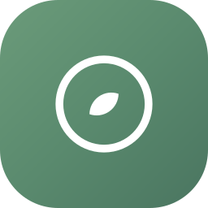

Interactive walkthrough of Decide, claim rounds, route vs start, and host job states. Core-brain Decide is not an LLM.
Pick a scenario, then step through. Highlight shows where control sits.
Start the walkthrough.
Toggle whether a listener already covers this channel/thread. Decision flips instantly — no model call.
LLM comes later — only when frontdesk runs cursor-agent / claude / codex on a claimed job or agent message.
Route steers existing work. Start creates a new unit of work.
People mix these up. They are unrelated mechanisms.
CLAIM_OFFERFOCUS_CLAIM yes/noCLAIMED_WORK → delivered into that existing agentfocus frontdesk run on your machinebrain_jobs row in pendingrunning (FOR UPDATE SKIP LOCKED)Agents answer the offer. One yes assigns; many escalate; none expire.
Round is open. Waiting on offers.
brain_jobs state machineClick Next to walk a job from enqueue → host run → finish. Stale running jobs are reaped after ~4 minutes.
Short answers to the questions that keep coming up.
Is Decide an LLM? Pure Go: match alive listener on same scope + scope_id → Route, else Start. Zero model calls.
Is Route “steer into existing session”? Yes in spirit — work goes to the listening agent, often via --resume on the same Cursor/Claude chat. Not a Slack “steer” API; Focus agent pipe / job reuse.
Does Start always mean a new OS process? Start means a new work unit (task + job / agent registration). Processes are bounded by the host WorkPool (default 2 concurrent). Keep-alive supervisor may already be running.
Is work sandboxed on the server? No. API never execs Cursor/Claude/Codex. Your laptop’s focus frontdesk run does.
Are there ceilings? Agents: brain 1 / worker 8 (config). Worker spawn burst 3. Host concurrent CLI jobs default 2 (FOCUS_CLI_WORK_LIMIT).